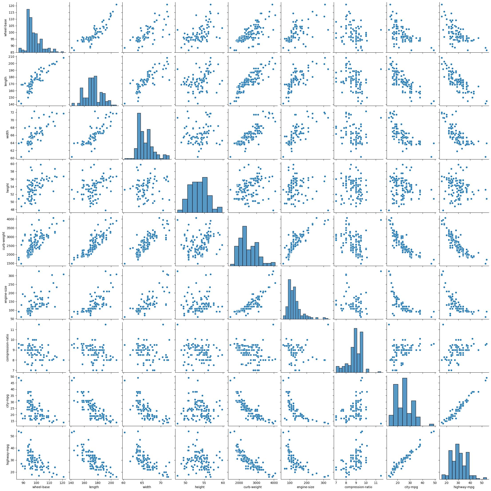
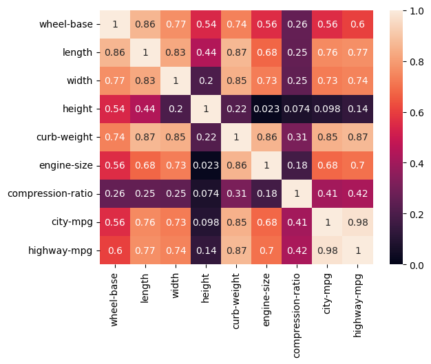
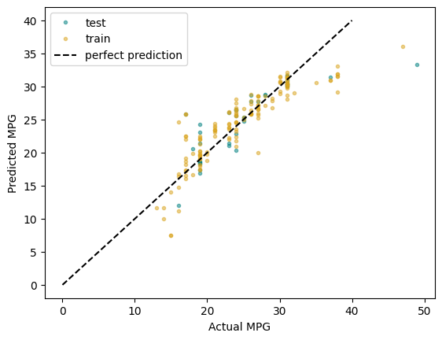

2.4. Example: Multiple Linear Regression Estimating Fuel Efficiency#
import pandas as pd
import numpy as np
import matplotlib.pyplot as plt
import seaborn as sns
data_df = pd.read_csv('https://raw.githubusercontent.com/shreyamdg/automobile-data-set-analysis/refs/heads/master/cars.csv')
data_df.head()
| Unnamed: 0 | symboling | normalized-losses | make | fuel-type | aspiration | num-of-doors | body-style | drive-wheels | engine-location | ... | engine-size | fuel-system | bore | stroke | compression-ratio | horsepower | peak-rpm | city-mpg | highway-mpg | price | |
|---|---|---|---|---|---|---|---|---|---|---|---|---|---|---|---|---|---|---|---|---|---|
| 0 | 0 | 3 | ? | alfa-romero | gas | std | two | convertible | rwd | front | ... | 130 | mpfi | 3.47 | 2.68 | 9.0 | 111 | 5000 | 21 | 27 | 13495 |
| 1 | 1 | 3 | ? | alfa-romero | gas | std | two | convertible | rwd | front | ... | 130 | mpfi | 3.47 | 2.68 | 9.0 | 111 | 5000 | 21 | 27 | 16500 |
| 2 | 2 | 1 | ? | alfa-romero | gas | std | two | hatchback | rwd | front | ... | 152 | mpfi | 2.68 | 3.47 | 9.0 | 154 | 5000 | 19 | 26 | 16500 |
| 3 | 3 | 2 | 164 | audi | gas | std | four | sedan | fwd | front | ... | 109 | mpfi | 3.19 | 3.40 | 10.0 | 102 | 5500 | 24 | 30 | 13950 |
| 4 | 4 | 2 | 164 | audi | gas | std | four | sedan | 4wd | front | ... | 136 | mpfi | 3.19 | 3.40 | 8.0 | 115 | 5500 | 18 | 22 | 17450 |
5 rows × 27 columns
data_df.columns
Index(['Unnamed: 0', 'symboling', 'normalized-losses', 'make', 'fuel-type',
'aspiration', 'num-of-doors', 'body-style', 'drive-wheels',
'engine-location', 'wheel-base', 'length', 'width', 'height',
'curb-weight', 'engine-type', 'num-of-cylinders', 'engine-size',
'fuel-system', 'bore', 'stroke', 'compression-ratio', 'horsepower',
'peak-rpm', 'city-mpg', 'highway-mpg', 'price'],
dtype='object')
columns_to_keep = data_df.columns[3:]
cars_df = data_df[columns_to_keep]
2.4.1. Exploratory Data Analysis#
# cars_df = cars_df[cars_df['fuel-type']=='gas']
cars_df = cars_df.query('`fuel-type`== "gas"')
cars_df.info()
<class 'pandas.core.frame.DataFrame'>
Index: 185 entries, 0 to 204
Data columns (total 24 columns):
# Column Non-Null Count Dtype
--- ------ -------------- -----
0 make 185 non-null object
1 fuel-type 185 non-null object
2 aspiration 185 non-null object
3 num-of-doors 185 non-null object
4 body-style 185 non-null object
5 drive-wheels 185 non-null object
6 engine-location 185 non-null object
7 wheel-base 185 non-null float64
8 length 185 non-null float64
9 width 185 non-null float64
10 height 185 non-null float64
11 curb-weight 185 non-null int64
12 engine-type 185 non-null object
13 num-of-cylinders 185 non-null object
14 engine-size 185 non-null int64
15 fuel-system 185 non-null object
16 bore 185 non-null object
17 stroke 185 non-null object
18 compression-ratio 185 non-null float64
19 horsepower 185 non-null object
20 peak-rpm 185 non-null object
21 city-mpg 185 non-null int64
22 highway-mpg 185 non-null int64
23 price 185 non-null object
dtypes: float64(5), int64(4), object(15)
memory usage: 36.1+ KB
sns.pairplot(cars_df)
plt.show()

cars_corr = cars_df.corr(numeric_only=True)
sns.heatmap(np.abs(cars_corr), vmin = 0, vmax = 1, annot = True)
plt.show()

2.4.2. Modeling#
Can we estimate fuel economy from other car specifications?
# Importing packages
from sklearn.linear_model import LinearRegression
from sklearn.preprocessing import StandardScaler
from sklearn.model_selection import train_test_split
from sklearn.datasets import make_regression
from sklearn.metrics import root_mean_squared_error, r2_score
# Chose features from correlation heatmap
# curb-weight most correlated, and height and compression independent of curb-weight
features = ['curb-weight', 'height', 'compression-ratio']
target = ['city-mpg']
X = cars_df[features]
y = cars_df[target]
In this case, we’ve selected the features ourselves, using intuition about correlation and avoiding colinearity between features. Our next steps:
Split the data into training (80%) and testing sets (20%). Each set includes both a features (X) and corresponding targets (y).
Normalize the data with StandardScalar. We do this because linear regression relies on a distance calculation.
First, create the StandardScalar transformer.
Fit the scaler to the feature vector of the training set. This calculates the mean and stdev for every feature.
Transform the training features using the scaler (X transformed to Z).
Create and fit the linear regression model.
Create the ‘template’ of a LinearRegression model.
Fit the model using the scaled features (Z) and targets (y) from the training set.
Make predictions.
Use the linear model to calculate the predicted targets (\(\hat y\)).
To make predictions using the test set, we must first scale the features.
Assess the model and visualize results.
Calculate RMSE and R2
Plot prediction vs actual
# Set aside data for testing
X_train, X_test, y_train, y_test = train_test_split(X, y, test_size = 0.2)
# Normalize the data
sc = StandardScaler()
# Calculates mean and stdev of X_train
sc.fit(X_train)
Z_train = sc.transform(X_train)
# Choose our model type (linear regression) and fit the parameters
linreg = LinearRegression()
# This fit is where we get values for thetas (our parameters)
linreg.fit(Z_train, y_train)
linreg.__dict__
{'fit_intercept': True,
'copy_X': True,
'tol': 1e-06,
'n_jobs': None,
'positive': False,
'n_features_in_': 3,
'coef_': array([[-5.27598644, 0.57553305, 0.80258601]]),
'rank_': 3,
'singular_': array([14.60079619, 11.33202138, 10.11938942]),
'intercept_': array([24.59459459])}
2.4.3. Model Evaluation#
# Make predictions with the model
y_pred_train = linreg.predict(Z_train)
# Make predictions on our test data
Z_test = sc.transform(X_test)
y_pred_test = linreg.predict(Z_test)
R2_train = r2_score(y_train, y_pred_train)
R2_test = r2_score(y_test, y_pred_test)
RMSE_train = root_mean_squared_error(y_train, y_pred_train)
RMSE_test = root_mean_squared_error(y_test, y_pred_test)
print(f'Train: \tR2: {R2_train:.3f}\tRMSE: {RMSE_train:.3f}')
print(f'Test: \tR2: {R2_test:.3f}\tRMSE: {RMSE_test:.3f}')
Train: R2: 0.773 RMSE: 2.979
Test: R2: 0.676 RMSE: 3.664
plt.plot(y_test, y_pred_test, '.',
color = 'teal', alpha = 0.5,
label = 'test')
plt.plot(y_train, y_pred_train, '.',
color = 'goldenrod', alpha = 0.5,
label = 'train')
plt.plot([0, 40], [0, 40], 'k--',
label = 'perfect prediction')
plt.xlabel('Actual MPG')
plt.ylabel('Predicted MPG')
plt.legend()
plt.show()
